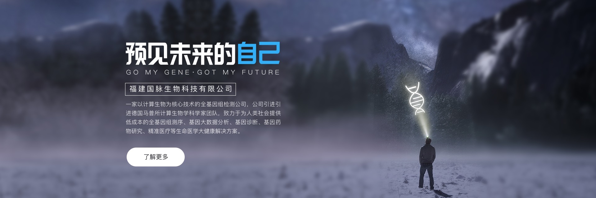

解密数字生命，改变未来生活
推动精准基因健康医疗普惠大众的进程
领先的科研团队
引进全球基因尖端领域德国马普所计算生物学科学家团队
千元级检测技术
拥有全球首个千元级的个人全基因组二代测序检测技术
两库一平台
自动化大数据分析检测平台和强大的全基因组数据库和DNA样本库
大数据解读能力
自主研发高性能计算机集群的分布式计算，保持数据精度和完整性
检测精度及完整性
一次同时检测和解读6000多项检测项目，为健康提供全面数据支撑
分析你的
祖源
地球上存在过1000亿人，我们所有人都交织在复杂的血缘网络中。你的基因就是一本历史书。它将告诉你：你是谁？你从哪里来？我们的身体承载着过去。在你的每一个染色体中，都记录着我们人类这个物种的完整历史。你的DNA可以告诉你，你的祖先在500多年前的生活。按地区分类，探索你的祖先。我们祖先的每一次选择，无论是狩猎还是采摘，选择与谁结婚，都决定了现在的你和我。
健康
指南
关心自己与家人的健康，从健康基因检测开始！通过检测，您将更了解身体的情况，轻松根据检测的结果，做最有效的健康风险管理。
疾病风险
每个人都是独一无二个体，要怎么找到人与疾病间关系呢？如何从基因DNA中，了解未来的人生命运？预防医学基因检测，实现了这个理想！面对疾病的威胁，人们将从原本的听天由命进而反转局势，掌握主导权，规划健康美丽的人生！
常见疾病
Common disease
肿瘤疾病
Tumour disease
常见传染病
Common infectious
罕见疾病
Rare disease
儿童
基因
单基因遗传病是导致新生儿出生缺陷的主要原因之一，目前单基因遗传病有7000多种，明确相关致病基因的约3500多种。有研究显示平均每人携带2.8个致病突变。及早获得孩子的基因信息，了解孩子的用药安全，营养代谢，天赋优势等等更多详情，为孩子健康成长，试性发展奠定基础。
女性
关怀
基因检测打破了传统检测的局限性，不仅能在检测的过程中减少对于女性的创伤，而且检测内容更为广泛。除了宫颈癌、乳腺癌等高发肿瘤和常见疾病的基因易感检测外，还有孕妇叶酸代谢能力检测，肌肤抗衰老等个性检测项目，为女性健康提供专属关爱。
基因头条App，便捷查阅报告
Your browser does not support the video tag.
基因检测只是开始
国脉生物致力于分析解读更多的基因型和表型数据，从而实现从“环境特征”到“基因特征”的健康信息全纪录，使我们的生活更美好。